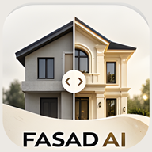

Нет подключения к интернету
Fasad AI нужен интернет, чтобы загружать фото и создавать дизайн. Проверьте соединение и попробуйте снова.

Fasad AI нужен интернет, чтобы загружать фото и создавать дизайн. Проверьте соединение и попробуйте снова.